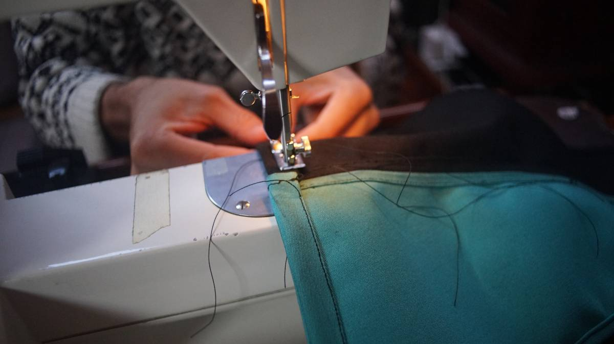

burgee

22.10.03
Victoria BC, Canada.
A burgee is a kind of distinguising maritime flag, flown by members of sailing clubs.
We made our own burgee(design by Lizbeth) to represent Merveilles, an online community that we are part of, consisting of forward-thinking individuals who strive to better each other and their surroundings through constant creation and play.

Many sailing club fly burgees made from cheap materials that fray in high winds and with colors that fade due to the sun, and so we opted for materials that we knew would last.
We visited Jeunes Brothers in downtown Victoria and purchased some Sunbrella off-cuts(Sunbrella is an expensive material, but off-cuts are sold for cheap). We got some cyan as well as a short length of black. We already had some white UV-resistant sail thread, but had to buy some black thread too. For the white circle, we used some sail repair material we already had on hand(Dracon tape).
Sunbrella fabric is durable for a reason, the threads are tight, and so it is very hard on a regular sewing machine(we broke about 5 needles). We used the machine for the thin parts of the burgee, and had to do the thicker areas by hand. We used an old burgee we had onboard for size, they have to be large enough to be readable from afar(on sailboats burgees are flown way up the mast, or under the lowermost set of spreaders on the starboard side). We also had to hand-stitch the white circles on
Because we had to make a seam down the center of the two halves, this burgee may fly a little stiff, but at least it'll last. Unfortunately, we couldn't make a forked end like in the original design (too hard). We ran a line of paracord on the inside of the burgee and made a pocket to hold it in, we'll use this line to tie the burgee to pino. Burgees usually use grommets, but we think that a rope will be more durable.
We bought some extra material, and hope to make more for our Merveilles sailing friends... but first, we'll fly this test burgee on Pino and see how well it withstands Pacific Northwest winters and summers. For future flags, we'll consider getting some cyan thread so that the stitching is less visible on the fabric.